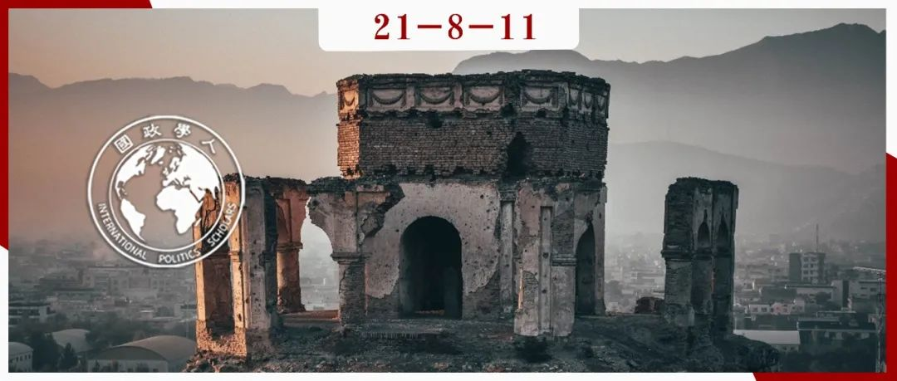

收录于合集

作品简介
作者： Michael P. McKinley，2014年至2016年间担任美国驻阿富汗大使，前国务卿蓬佩奥的高级顾问；Vanda Felbab- Brown，非国家武装行为者倡议组织主任、布鲁金斯学会高级研究员；Daniel Byman，乔治城大学教授、布鲁金斯学会高级研究员。
编译： 朱文菡（国政学人编译员，外交学院国际关系博士生）
来源： 《外交事务》（ Foreign Affairs ），2021年8月16日至18日。
归档： 《国际关系前沿》2021年第8期，总第35期。

内容导读
今天，我们共同见证了阿富汗伊斯兰酋长国的新生。随着美军的仓皇撤退和塔利班的极速胜利，美国朝野就谁应该为这场不体面的撤军负责和美国未来对阿政策应何去何从展开激辩。以下三篇文章均来自《外交事务》杂志，分别发表于塔利班收复喀布尔的第一天、第二天和第三天，探讨的主题也刚好对应了美国对阿政策的过去、现在和未来。在共和国落幕易帜之际，前人在此折戟的教训宜共鉴之。
文章导读
01
阿富汗问题到底是谁的过失？
**
**
Michael P. McKinley
随着阿富汗落入塔利班手中，美国朝野对拜登政府撤军决策的指责变得直接且无情。然而， 作者指出，拜登政府的快速撤军是911事件二十年来、前三任政府失败政策的共同结果 ，也是阿富汗领导人自身失败的结果。 现在直言不讳的许多批评者都曾是这些政策的设计者。 作者反思道，在2013年至2016年工作期间，他意识到美国面临挑战之严峻。尽管美国成功消灭了本国境内的基地组织也降低了恐袭威胁，但在防止叛乱和阿富汗国家建设上都失败了，既低估了塔利班的韧性，也误读了地缘政治现实。 是时候面对现实了：美国即使再推迟一两年撤军，也不会有什么差别。 不过是继续做出承诺、消耗美元、忍受战况的不断恶化和更多美国人的丧生。
军事溃败与军队腐朽
美国最明显的错误在于对阿富汗国防力量的持续高估。安全部队纸面上的规模和装备都优于塔利班。直到2021年3月，呈给拜登政府的情报简报都认为塔利班将在两到三年内（而不是几周内）占领全境。过去十余年的报告一直描绘安全部队的光辉进展，直到近几年报告才开始反映出存在吃空饷的“幽灵”士兵等问题，浪费和欺诈高达数十亿美元且涉及阿富汗政府高层腐败。
节节失利
从2013年起，即使创始人去世、继任者暗杀和联军轰炸，都没能阻止塔利班的节节胜利，即华盛顿所谓的自身的节节失利（eroding stalemate）。其原因在于：在塔利班尚处守势时不重视军队建设，近两年又大批撤回美国承包商。美国7月撤离巴格拉姆空军基地这个关键的后勤支点，将成为其在阿富汗军事失败的持久象征，也限制了后续使馆人员和阿富汗人的撤离。阿富汗士兵还常常连续数月拿不到薪水和补给。他们被自己的指挥官和政治领导人所辜负，后者二十余年来都没能赢得士兵的效忠，也无怪乎安全部队这几天都疏于抵抗。此外，美国也没有认识到残暴的地方军阀面对塔利班的软弱，高估了自身应对巴基斯坦庇护塔利班的能力。

误读现实
二十年来，美国试图帮助制造一个有效的阿富汗政府，却没能成功。通过2001年波恩会议和此后通过的宪法，美国将西方民主模式强加于阿富汗。阿富汗前总统卡尔扎伊常抱怨美国的政治影响力过大。时任美国驻阿富汗和巴基斯坦特别代表还试图影响2009年大选，阻止前者获胜，却反而将其变成了敌人。2019年的总统选举只有不到200万阿富汗人投票，而五年前还有800万人。2021年6月，联合政府领导人访问华盛顿时，加尼政府已经越来越被孤立，而华盛顿还继续假装他们对迫在眉睫的塔利班威胁有着共同的目标。阿富汗领导层从未团结一致，地方与中央、普什图人和少数民族间关系紧张。卡尔扎伊和加尼都是通过政治分赃，而非促进共同民族的愿景来处理族裔政治。美国对领导人问题的干涉只是破坏了阿富汗政府的独立性和合法性。相比之下，塔利班的政治动员更为成功，不断得到民众支持和年轻人追随。现在，当塔利班武力占领喀布尔时，威胁不予国际承认几乎没有意义。
美国的误判也与其野心过大有关。在国家建设上，虽然促进了女性受教育权、一定的新闻自由和司法制度以及难民回归，但在腐败和缉毒方面都失败了。
谁的过失？
对撤军持批判态度的人认为，塔利班治下的阿富汗将再次成为威胁美国安全的恐怖组织的避风港。将阿富汗威胁降低到最低限度正是美国干预阿富汗的初衷，但其代价过于高昂。恐怖主义死灰复燃并不意味着美军应该无限期驻扎阿富汗，毕竟还存在比其威胁更大的伊斯兰国和基地组织。
总之，华盛顿撤军不是当今阿富汗局势的唯一诱因。真正的原因在于二十年来的失败政策和阿富汗领导层自身缺陷。如果非要争执“是谁失去了阿富汗”，我们应该承认是我们所有人的过失。
02
塔利班胜利后，美国现在能够做些什么？
**
**
Vanda Felbab-Brown ** ** ********
美国撤军后，塔利班只花了十天就推翻了现政府。当塔利班进入喀布尔后，美国扶植的政府抛下整个国家逃走了。其实，安全部队与他们所谓的敌人达成交易早已不是一件秘密——警告塔利班即将发动进攻，拒绝应战，并出售武器装备。换言之，阿富汗军队戏剧性的垮台只是暴露了喀布尔权力大厅多年来的腐败。难怪阿富汗人民如此不信任他们的政府，也难怪本周一个又一个城市向塔利班投降。 作者认为，美国等国家虽然在阿富汗犯了很多错误，但二十年失败国家建设的罪责完全在于阿富汗领导人。其警示在于：除非美国对其合作伙伴表现出严厉的爱，否则多年努力都会付之东流。
漫长的未来
过去十年，随着美国撤军，治国工作逐渐落到阿富汗政府肩上。但政治领导人只顾为自己的小集团获取权力和金钱，甚至通过制造政治危机或行政瘫痪从中央政府捞取好处。阿富汗政客们错觉美国永远不会离开，无视来自奥巴马、特朗普和拜登政府的信号。他们自认为是美国、中国和俄罗斯新一轮“大博弈”的支点，可以将美国卷入对阿富汗的无限承诺中。因此，他们也就没有理由改革安全部队并回应民众需求。
阿富汗政府的软弱使历届美国政府进退两难。一方面，如果美国设定撤军时限，塔利班会等到美军撤离对阿富汗发动全面进攻；另一方面，如果美国不设定最后时限，阿富汗政府将失去改革动机。阿富汗政府既不想失去权力，又不思进取，甚至希望自身安全部队的软弱能动摇拜登政府的撤军决心，推翻多哈协议，进而留住美军履行无限期的承诺。
未选择的道路
拜登政府在今年春季宣布撤军，到7月底已撤离95%。华盛顿清楚地结束了这场战争，阿富汗军队的士气比以往更低落。即使假设美国承诺派遣一支2500人至5000人的有限部队，也绝不可能改变阿富汗政府和军队不思进取与塔利班不断崛起的局面，反而会回到美国通过增兵来限制塔利班却导致战事遥遥无期的恶性循环。
但作者也认为，拜登政府应该将撤军的最后时限设定在12月而不是9月，这样阿富汗政府和军方以及阿富汗平民都能有更多调整的机会，而额外的三个月并不会增加太多费用。但如果停留的时间更长，则可能面临美国与塔利班全面战争卷土重来，美国的情报、侦察和其他支持系统也会陷入瘫痪，无法从无望的泥潭中抽身。
现在怎么办？
作者认为，当务之急是开展强硬外交并与塔利班谈判。华盛顿应向塔利班施压以维持喀布尔机场的正常运转。安理会应警告塔利班不要在喀布尔制造流血事件，该组织有责任维护喀布尔秩序并提供人道主义援助，因为目前该市有成千上万的难民没有食物和住所而在街道流浪。
美国和国际社会应向可能遭到塔利班报复的阿富汗人提供签证，这些人不仅包括与美国合作的人，还包括社会活动家、人权倡导者和记者。在未来数周和数月，美国应向塔利班释放明确的信号：他们不能处决前阿富汗政府成员和这些社会活动家，他们需要抑制报复性杀戮。华盛顿也应尽可能推动塔利班建立包容性政府，吸纳少数民族、技术官僚和妇女。塔利班应确保妇女教育、医疗、工作和不在男性监护下出门的权利。
然而作者认为这难以实现，因为塔利班的迅速胜利将使其不愿妥协，也不愿分享权力。在这点上美国的影响力有限，手段仅限于拒绝经济援助、拒绝予以承认、拒绝解除制裁和拒绝其加入国际金融体系。这些手段都无法左右现实。此外，中国、伊朗和俄罗斯已与塔利班达成和平协议，这也削弱了美国的影响力。作者认为，这些国家更关心反恐和经济，而不在意人权和政治多元化。因此，塔利班的执政能力将很大程度上取决于当地社群与新政府议价的能力。
在反恐上，尽管塔利班不可能切断与基地组织的联系，但会限制本土发动的国际恐怖袭击。这不仅是美国的要求，也是中国、伊朗和俄罗斯的关切。塔利班将有强烈动机继续在阿富汗与伊斯兰国作战。但除此之外，情况不容乐观。阿富汗建设类似伊朗的政治和社会秩序将是最好的希望。即，塔利班最高委员会大约20名领导人形成技术官僚之上的统治机构。在最好的情况下，他们甚至会允许某种形式的立法和行政选举。技术官僚和少数族群将获得职务，女性将被允许获得医疗、教育和工作。
03
未来阿富汗会再次成为恐怖分子避风港吗？
Daniel Byman
塔利班究竟在多大程度上获得了胜利呢？这个问题是拜登政府决定撤军的核心。周一，拜登为自己的决策辩护，“我们在阿富汗唯一的关键国家利益，也是我们一以贯之的目标：防止恐怖分子袭击美国本土”。共和党资深议员Michael McCaul指责“我们将回到911之前的状态——一个滋生恐怖主义的温床”。参谋长联席会议主席Mark Milley 将军警告说，基地组织和伊斯兰国可以迅速重建他们在阿富汗的网络。
作者认为，基地组织卷土重来的风险是存在的，但阿富汗不可能恢复到911事件前作为圣战分子避风港的角色。 基地组织的软弱、塔利班自身的动机和911事件后美国情报协调、国土安全和远程军事行动的提升都减少了这种威胁。
另一场胜利？
尽管是塔利班赶走了美国，但基地组织还是将其宣称为自己的胜利。美国成为继苏联后，别在基地组织腰带上的又一超级大国。即使在美国的威逼利诱下，塔利班与基地组织的联系也已经持续了二十余年，没有理由认为这场胜利会切断二者间的关联。联合国官员报告说， 基地组织已经深深扎根于塔利班之中，进行联合行动和训练 。基地组织声称他们仍忠于塔利班的领导。但并非所有圣战分子都像基地组织那样从中受益。 伊斯兰国就激烈反对基地组织和塔利班，声称后者已经抛弃了伊斯兰教，转而支持阿富汗的民族主义。 除了意识形态上的差异，他们还存在圣战运动中的权力斗争。塔利班可能会试图拉拢伊斯兰国指挥官，从而对其形象造成打击。
然而，最重要的反恐问题不是塔利班与这些组织的关系，而是塔利班是否会允许基地组织利用阿富汗作为国际恐怖袭击的基地。
不够安全的避风港
失去阿富汗无疑会阻碍美国的反恐努力，增加基地组织再次利用这个国家打击美国本土的风险。美国的情报获取会减少，也无法阻止基地组织在当地建立训练营。然而，情况还是很难回到911事件之前。塔利班自身支持国际恐怖主义对抗西方的动机很低，也因为911事件而失去了二十年的权力，目睹其核心领导人在与美国的战斗中死去。
美国情报机构也为军事撤离做了准备，确保一定的情报收集和打击能力。美国军方已经在探索如何利用阿富汗境外基地的空中力量打击基地组织的营地，或在必要情况下以其他方式在该国活动。此外911事件后全球情报机构也使潜在的圣战新兵难以到达阿富汗或在回国后被迅速逮捕。
全部套牢
短期内，塔利班和美国都会忙得不可开交。塔利班需要在阿富汗全面巩固其权力，基地组织也需要时间重建。美国必须关注阿富汗正在发生的人道主义危机，特别是要帮助成千上万冒着生命危险与美军合作的阿富汗人。华盛顿不应忽视拥有强大反恐能力和对地区政府施压的必要性，以防止阿富汗再次成为全球圣战中心。
译者评述
尽管拜登政府正因其仓促撤军在国内备受指责，但从以上论述中还是能够看到当前的窘境其实是由911事件后历届美国政府共同造就的。正如前驻阿富汗大使P. Michael McKinley所言，今天的批评者正是这些政策曾经的制定者，过错应由曾参与其中的政客们共同承担。但Vanda Felbab- Brown也指出，如果拜登将撤军期限由9月改为12月，也许美军在阿富汗的谢幕会体面一点。三位作者都认同，美军在阿富汗的行动劳财伤民，没有继续驻扎的必要，但同时也对恐怖主义死灰复燃表示担忧。Daniel Byman系统探讨了这个问题，认为塔利班的成功不等于圣战分子的成功，塔利班虽然与基地组织合作但也清楚国家建设需要大国支持，而各大国都要求塔利班抑制恐怖主义，建立包容性政府。
7月28日，国务委员兼外长王毅在会见塔利班政治委员会负责人巴拉达尔一行时，就指出“美国和北约从阿仓促撤军，实际上标志着美对阿政策的失败”，强调阿富汗应“自主建立符合阿富汗自身国情、广泛包容的政治架构”。
喧嚣过后，阿富汗的未来仍然充满不确定。前副总统还在动员民众抵抗；国内既有的恐怖主义、族裔对立、部落和教派林立仍然存在；塔利班曾经的负面形象也让许多习惯了世俗生活的阿富汗妇女为基本的独自出门、受教育和工作的权利感到担忧。
再过不到一个月，就是911事件二十周年。这不仅是美国的伤痛，也成为了阿富汗的伤痛。然而故事远未结束，无数阿富汗人还将继续用自己的人生为历史注脚。
排版 | 韩心蕊 臧泽华
文章观点不代表本平台观点，本平台评译分享的文章均出于专业学习之用, 不以任何盈利为目的，内容主要呈现对原文的介绍，原文内容请通过各高校购买的数据库自行下载。
好好学习，天天“在看”
国政学人
支持学术公益与知识传播
微信扫一扫赞赏作者 __赞赏
已喜欢，对作者说句悄悄话
取消 __
发送给作者
发送
最多40字，当前共字
上一页 1/3 下一页
长按二维码向我转账
支持学术公益与知识传播
受苹果公司新规定影响，微信 iOS 版的赞赏功能被关闭，可通过二维码转账支持公众号。